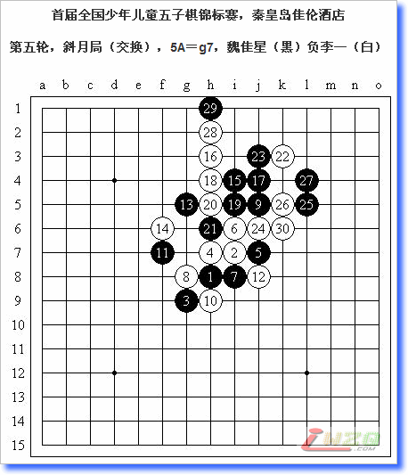

原文发表于我的百度空间（http://hi.baidu.com/%C6%C1%B1%CE/blog/item/c467e21f34492908314e1550.html）
＝＝＝＝＝＝＝＝＝＝＝＝＝＝＝
我第一局一般不老实，感觉对手不强就弄名月－岚月的强防。因为赛前临时拆了9－10的最强点，感觉10－h9后黑棋没有简单的必胜手段，所以就使用了一下。同时拆解了岚月局中白4立二一个不常见的黑优变化作为出奇制胜的手段。对手很聪明地没有选择必胜的5－k8，那个必胜太复杂了，我估计赛场里没人走得出来。实战5黑优势大，控制局面，我也是希望执白在中盘之后有所作为，但此时还是佩服一下对手的策略。实战9不好，10后白棋其实很生动，11也最强，12后黑棋难以选择防点。13－17则14－18好手。实战14是一个小小的欺骗性手段，15必败，15－20则16－g10进行防守反击。实战19简单失误，白棋五连。19－20，20－g11，21－h10，22－g9，抓“三三”禁手，依然可以简单取胜。
这一局的赛前准备很成功！丰伟诚我在ORC接触得比较多，我认为他要么使用我不熟悉的瑞星局，要么使用他熟悉的疏星局，因此特意准备了多套变化。实战他果然开出瑞星局。到11正常，12，13的变化他了解，令我惊奇的是他竟然对这个14很陌生！以下可能是有些慌了，17不好，让18明显便宜一手先。戏剧性的是我计算到了至实战25的变化，黑棋会被抓禁速败，因此确定黑棋没有更好的进攻手段，必然回防并让我掌握先手。但丰伟诚竟然真的按照我的套路走出必败……其实18后黑棋就不应该这么用强地进攻了，至黑23都没有必要。
赛前回忆了一下芦海在QQGame上和高手们的对局，发现以斜月局居多，决定避开此局。考虑到我个人喜爱执白的特点，就选择了松月局，其实松月二打的定式我也不很熟悉，大概决定临场计算了，反正我的速度比较快，大概不会出现时间问题。实战5是流行的三打，我特意向他开局还给出了这个5，我心里有些没底，怀疑芦海是不是松月也很熟悉？这个5要比5－29强一些。我预感到按照最强变化走会对白棋很不利，只好选择了实战这个12的弱防，期待芦海进攻出错。13简明一手，14－32风险太大，应对15－15太有利了，之后在下方做棋，白棋很难防守了，实战14的选择以15应对依然是好手，16也最强，17－19或45都是简明的好手，白棋很难防守。但芦海似乎状态不太好，准确地说是有些发烧，实战至25进攻无理，26后局部彻底安定，现在理应直接防守，但一串交换之后至黑41彻底失先，其中38逆止是否可行？实战是保守的选择。认真确认黑棋没有VCT之后42率先进攻，黑棋提前将下面交换干净，我也谨慎地防守避免不必要的失误，54展开，扩大左上方白棋的优势，此时芦海的时间已经不够了，55明显是避开局部的攻杀，期望我在进攻中出现失误，否则如果白棋占55位，黑棋再进行大局上的防守考虑，时间也就一定不够了。可惜我的时间还很富裕，5分钟短考一下，56简明一手，当时就穷尽了附近的防守，已然必胜了。
这局同城德比我要全力争胜，否则我的小分太低了，毕竟我肯定是最后一次参见全少赛，也是把冠军作为目标的。至31手都是著名的瑞星和棋大定式。32－f7则33－e6，34－35唯一防，34－42黑棋可以简明必胜，34－40是赛前就和孙羽浩走过的一个变化，当时白棋满盘控制，现在看来黑棋也有很强的进攻手段。实战33是我综合分析了无数定式后认为的最强点，34是谱上的防点，35后定式结束，但后来拆棋认为34－35才最强，不知道那个定式是怎么回事。事实上35后白棋很难选择防点了。36后我长考，37先手冲四！否则37－39，38－37，黑棋顿时就没有攻势了。41单防，42防守。47便宜一手，48无奈，49盖冲同时做杀，白棋无解了。

赛前一直分析浙江最强的棋手应该是朱佳晨，不过这一局令我的想法有了变化，实际上魏佳星在最后一轮战胜了孙羽浩，证明了他强大的实力！留下斜月一打是预定的计划，三打也准备了一些变化。实战白6走出后有些后悔，因为7－8的必胜变化我还不会，还好实战7正着。其实这个定式浙江方面早就讲过了，但魏佳星忘掉了。能一直计算到15手正谱很令我佩服，只不过我知道定式并且走得非常快（并且显得很有信心）可能导致他的心理出现了波动。其中9－f9则10－11白必胜，13－21则14－h10白大优。17－21好点，以下18－19无奈防守，黑棋全盘控制。实战17强攻！18长
已经编辑好了，一直等你的棋评呢
总置顶3天